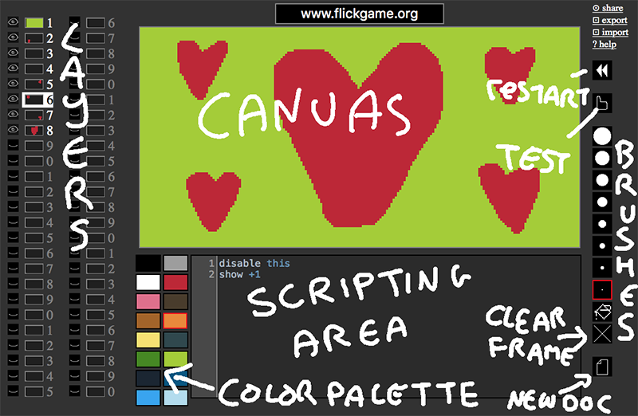

note: for the next week or so FLICKGAME_LAYERS is in beta - I *strongly* advise you to export standalone html version of your games to ensure working copies are preserved.
FLICKGAME_LAYERS is a one of many flickgame variants. It's much more complicated than the original flickgame, and I'm not fully sure it's worth the effort to learn yet. But let's see. here's a sample project

show 3 4 5Shows layers 3, 4 and 5.
show +3Shows the layer 3 layers ahead of the current layer. (Also enables them, if they were previously disabled).
hide -3Hides the layer 3 layers behind the current layer.
hide 3 4 5Hides layers 3, 4 and 5.
hide thisHides the current layer
disable 3 4Disables layer 3 and 4 (that is, if they were visible before, they will still be, but you won't be able to interact with them anymore).
enable 3 4Enables layer 3 and 4. Doesn't set things to visible if they weren't visible already).
if 1, 2, not 3 then hide 1 2 show 4 else show 1 2 hide 3 endIf layers 1 and 2 are visible, but 3 isn't, then hide the first two layers and show the third, otherwise show layer 1 and 2, and hide layer 3.
Drop me a line at analytic@gmail.com, tweet to me at @increpare, or post a bug report to github.